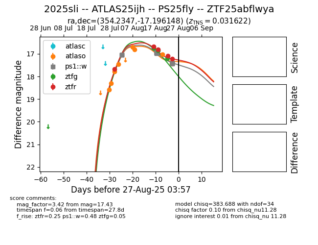

Target 2025sli at 2025-08-05 23:02, see:
FINK: fink-portal.org/2025sli
Lasair: lasair-ztf.lsst.ac.uk/objects/2025sli
ALeRCE: alerce.online/object/2025sli
TNS: wis-tns.org/object/2025sli
YSE: ziggy.ucolick.org/yse/transient_detail/2025sli
alt names
2025sli (yse,tns)
PS25fly (panstarrs)
ATLAS25ijh (atlas)
ZTF25abflwya (ztf,fink)
coordinates:
equatorial (ra, dec) = (354.2347,-17.19617)
galactic (l, b) = (59.0630,-70.13371)
photometry
last atlaso=17.45, ps1::w=17.05, ztfr=17.68
4 atlaso, 4 ps1::w, 1 ztfr detections
